у меня находиться тайтл под названием внук мудреца Главный герой – парень по имени Шин, родившийся в Японии. Работая в офисе, занимая низкую должность, он и подумать не мог, что однажды столкнется со сверхъестественными явлениями. Из-за несчастного случая, Шин скончался, и оказался в параллельном измерении. Там он встретился с весьма интересными обстоятельствами. Он прекрасно всё помнит о прошлой жизни, хоть сейчас и находится в образе младенца. Воспитывает Шина – пожилой человек, называющий себя Мудрецом. 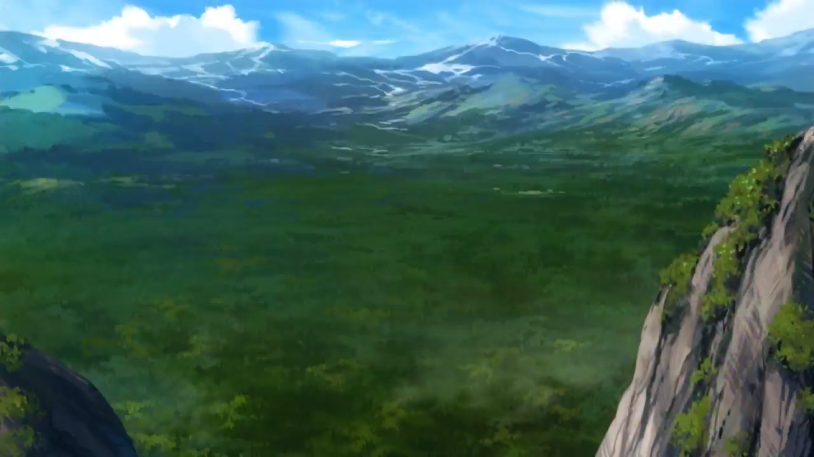 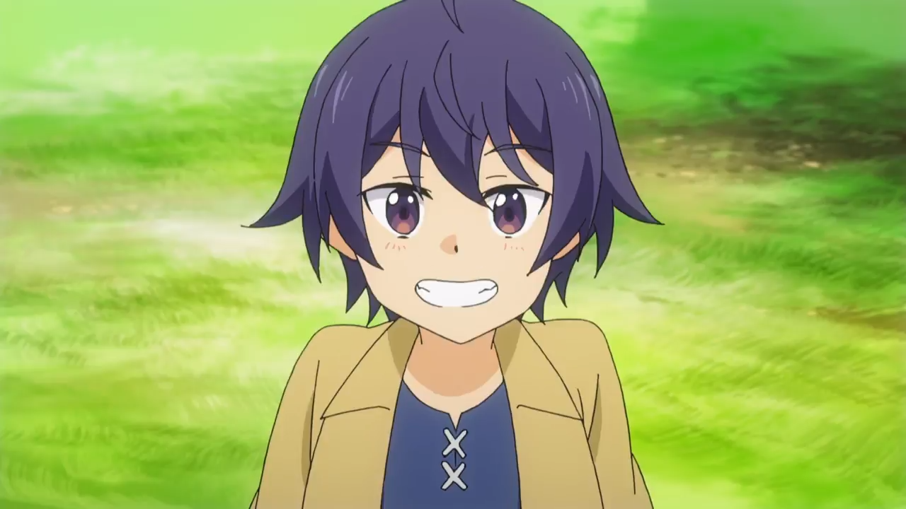 Когда Шин снова повзрослел, то стал понимать: - «Его цель – это начать развивать колдовство». Поэтому он намерен отправиться в королевство «Эрлшайд». В возрасте пятнадцати лет, паренек покидает старика, благодаря его за воспитание. Мудреца пугает, что найденный им ребенок, а в нынешнее время взрослый парнишка, кажется не дружит с головой. Отпустив юнца, он беспокоится за него. Этим временем, сам главный герой разыскивает «Академию Магии», где человек может развить удивительные способности. Раньше с помощью колдунов, человечество спаслось от великой катастрофы.
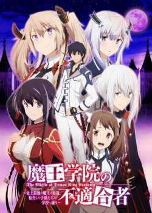у меня еще одно аниме где гг самый сильный а все остальные нетЭтот тайтл имеет название не признаный школой князь тьмы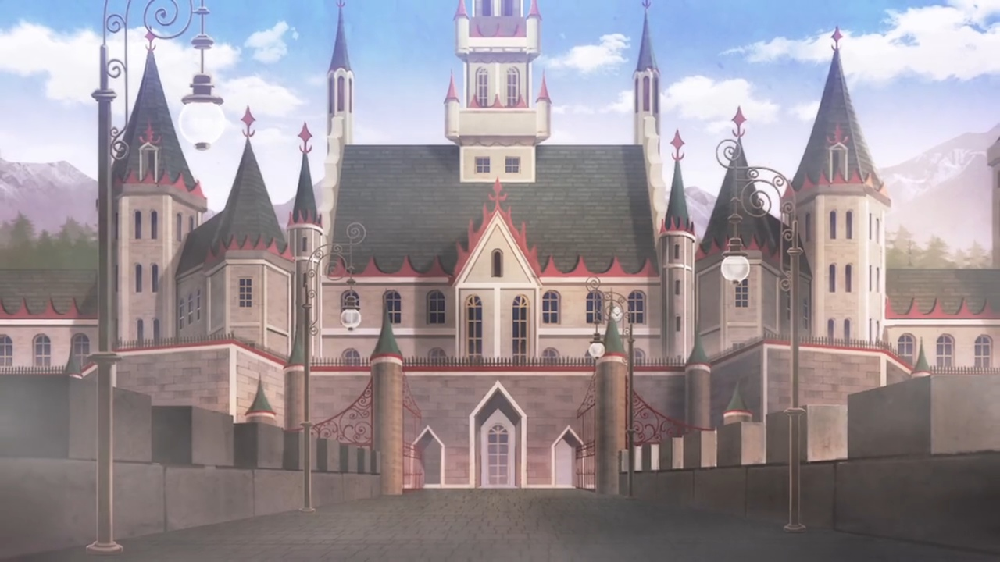 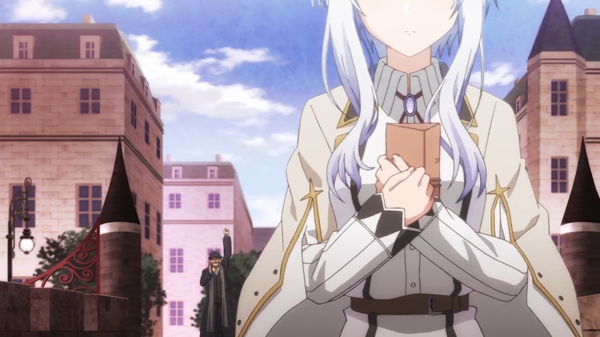Жестокий владыка тьмы, поверженный две тысячи лет назад, возродился... Однако в академии, где учат кандидатов во владыки тьмы, ему поставили оценку… «не годен»?! Он уничтожал людей, духов и даже богов, но бесконечная война наскучила ему, и владыка тьмы Анос Волдигод переродился с мечтой о спокойном мире. Только две тысячи лет спустя его ждали крайне ослабевшие от мирной жизни потомки и пришедшая в полный упадок магия. Анос отправился в Академию владыки тьмы, где собирают и воспитывают тех, кто может оказаться перерождённым владыкой, но там не разглядели его силы и заклеймили негодным. Более того, все считают, что между ним и легендарным владыкой тьмы нет ничего общего. Окружающие считают его ниже себя, а из последователей у Аноса — только девушка Миша, которая одна была к нему добра. Так начинается путь негодного владыки тьмы вверх по магической иерархии. «Будь то волей провидения, судьбы или чуда, рано или поздно передо мной все падут ниц.»
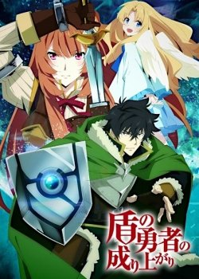Находиться аниме под названием восхождение героя щитаТемные силы пробудились и готовы напасть на Мальмарк, параллельную вселенную, в городах которой всегда светит солнце, и люди улыбаются на улицах. Как гласило пророчество, только четыре героя способны спасти мир от разрушительных волн, готовых уничтожить все население. Силы у обычных воинов постепенно угасают, они близки к поражению. Чтобы отыскать тех самых героев, единственных, кто смогут одолеть нечисть, отважные горожане отправляются в другое измерение, где, предположительно, могут обитать спасители. Они слышат мольбы и отправляются в охваченный город, чтобы спасти невинных и беззащитных людей. Они вооружены стрелами, мечами и магическими силами. 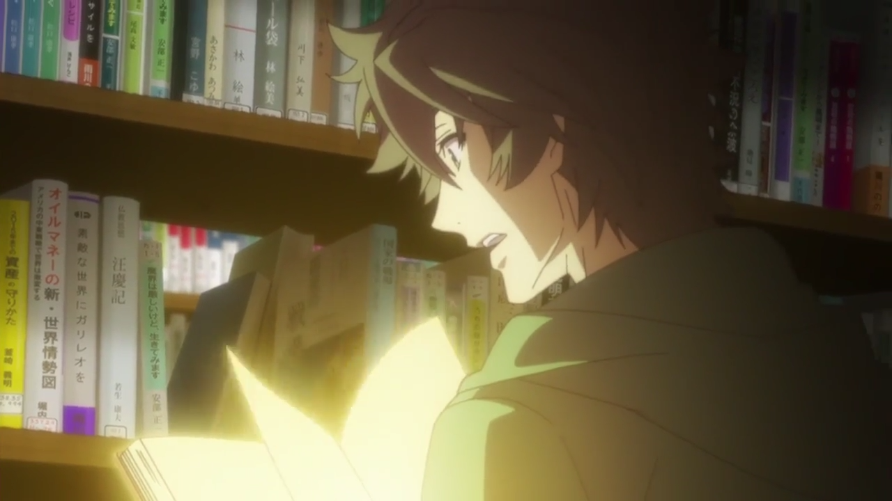 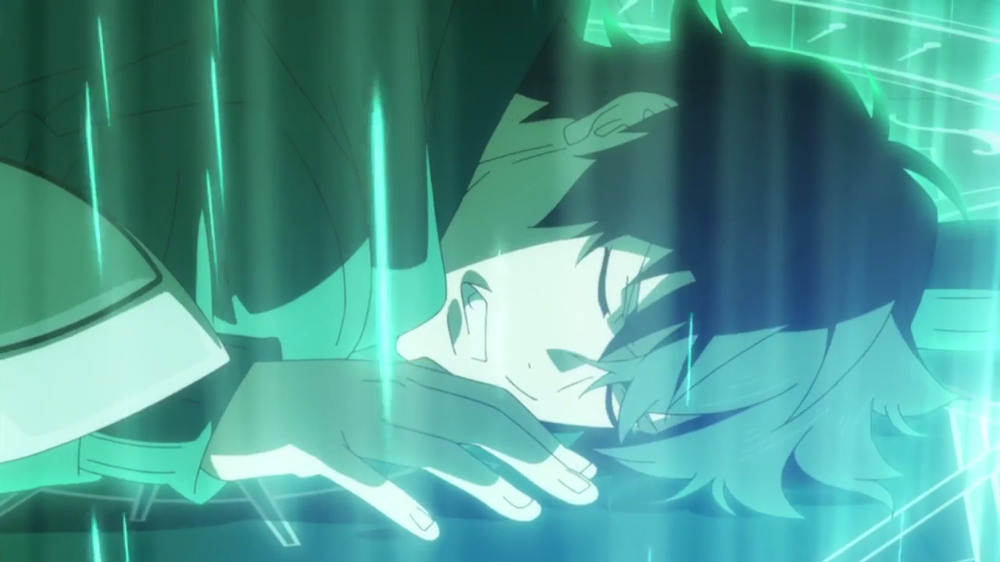 Наофуми Иватани сталкивается с большой проблемой. Он никогда и не хотел быть спасителем мира, всегда был где-то в середине или конце, уступая сильным и хитрым соперникам. Героизма в нем было мало, отваги тоже. Тогда молодого человека оставили одного, и на него сразу свалились проблемы. Сначала ограбили, потом обвинили в преступлении, о котором он даже и не слышал до этого. Теперь он пытается дать отпор насмешкам судьбы и желает показать людям, что они были с ним жестоки. Теперь он хочет мстить, доказывая, что достоин в этой жизни большего..
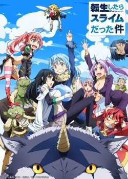забирает аниме под названием о моем перерождении в слизь.Интересно, в каком образе Вы пребывали в прошлой жизни? Банкира, балерины или хозяина прибыльной компании? Из длинного списка разнообразных вариантов главному герою достался самый оригинальный и сомнительный. Сатору Миками на протяжении определенного периода был рядовым служащим государственной структуры. Но совершенно неожиданно его жизненный путь прерывается. Всё происходит на улице, где парня атакует преступник, который ради скудной наживы решил его зарезать. Еще недавно персонаж жаловался, что устал от однообразного и монотонного существования, ну а теперь всё кардинально изменилось. 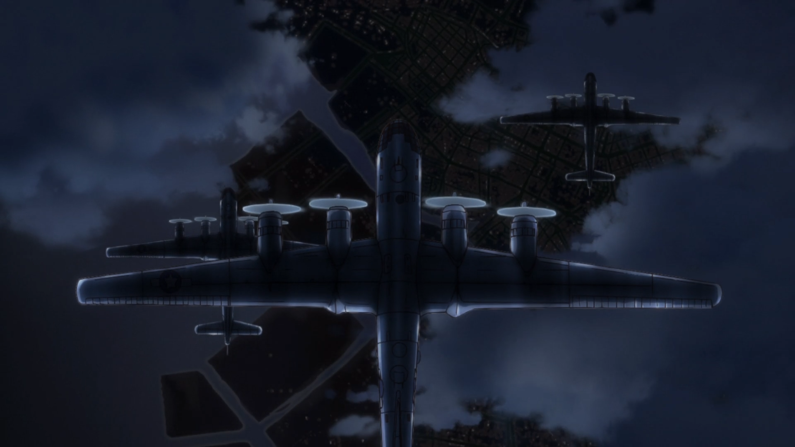 Миками не отправляется в преисподнюю или рай, а попадает в выдуманный мир, где он имеет облик комка слизи небольших размеров. Стоит отметить, что, несмотря на достаточно необычное видоизменение, Римиру, а именно так отныне зовут парнишку, обладает весьма выдающимся разумом. После трансформации в слизистую форму он сталкивается с бестелесным Великим Мудрецом, решающим наделить его даром обучения способностям врагов. Теперь персонаж будет проживать в фантазийной обители, где всё погружено в сплошной хаос. Здесь он попытается построить новую страну, где абсолютно все расы будут равны.

Аниме сао.Начало двадцать первого века, японский гений создал вселенную, релиз которой ждал весь мир «искусство меча». Геймеры получили возможность полного погружения. Новинка стала самой ожидаемой и десять тысяч образцов с молниеносной скоростью исчезли с прилавков. Все вошли в реальность, растворившись в ней и собрались в Городе. Появился создатель. Огромная черная тень пояснила участникам, что вернуться в реальный мир возможно только пройдя всю игру. Но есть один жестокий момент, виртуальная смерть означает и смерть в реальной жизни и пройти её наобум не получится. После громких слов создатель испарился, оставив игроков одних. 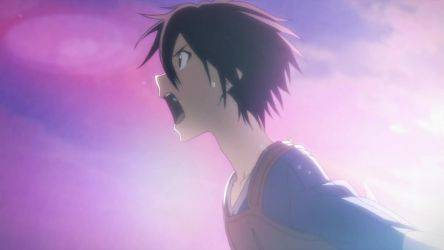 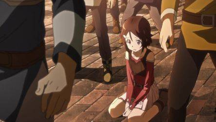 Реакция на сообщение оказалась разной. Началось отчаяние, кто-то объединился с другими, а некоторые, как герой Кадзуто, пошли по пути одни. Киригая сирота и поэтому попав в этот мир, он ни чего не теряет. Он бета-тестер и зная всё об этой игре, быстро завоевал популярность у игроков. Герой понимает, что без взаимодействия с другими ему не выбраться и приходится налаживать контакты с остальными игроками. А пока идёт бой на мечах, всем предстоит увидеть ещё немало удивительных вещей.